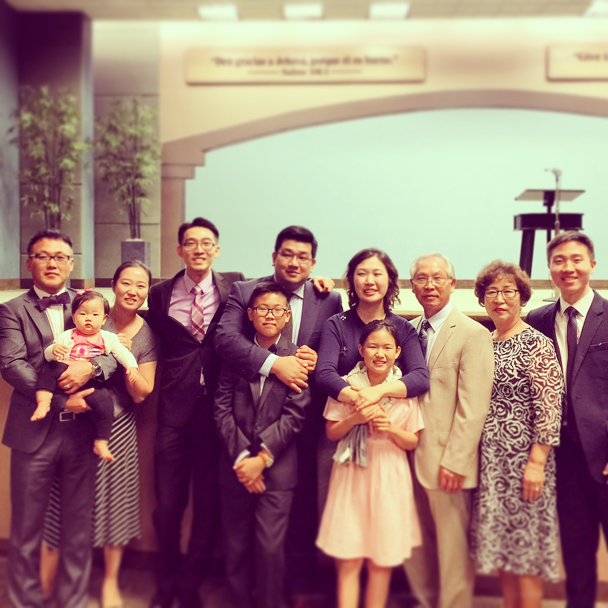

This is the introduction of the how the 3 beautiful family are united as one throughout the years. We hope you enjoy the photos, videos and comments.
Please do not post any of the files on social media as this is a private website for the family.

Family a is defined as a household, extentions or people who have same type of genetics or share memories from the years they have lived or spent together. Even though we had been far away in distance, no doubt our bond as a family has been strong that kept us all united.